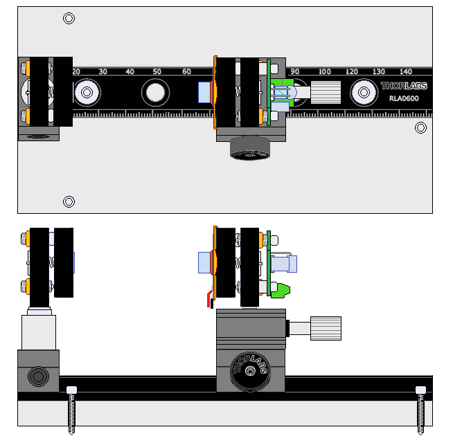
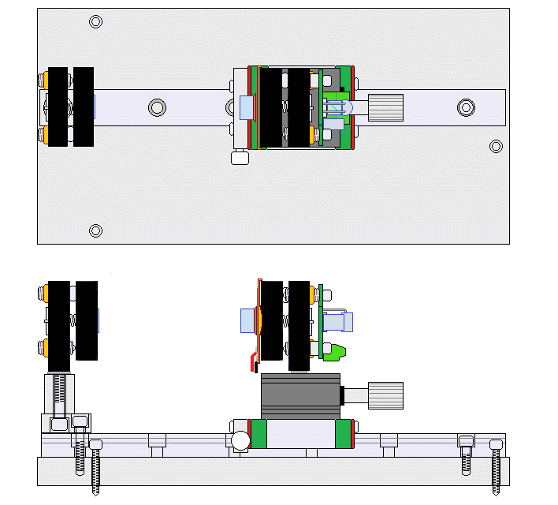
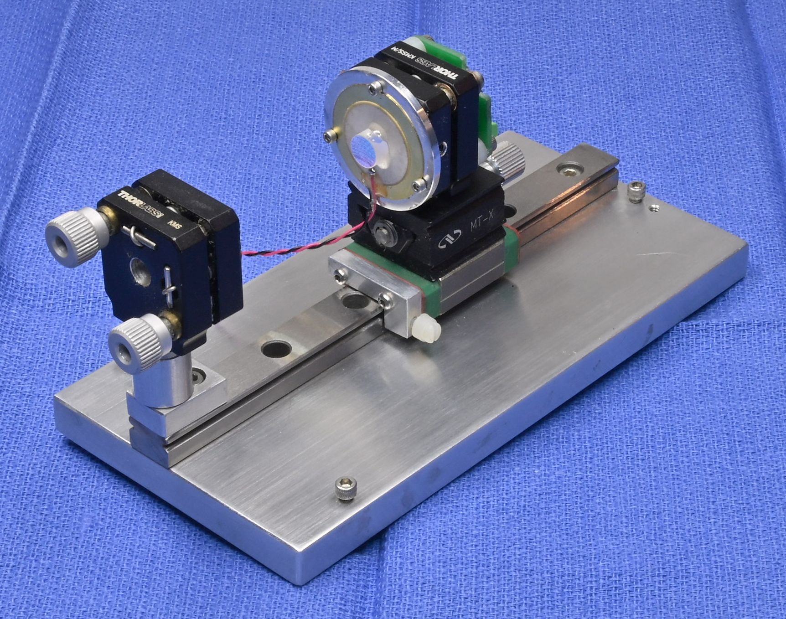

Copyright © 1994-2025
Sam Goldwasser
--- All Rights Reserved ---
Unlike the other kits, these utilize either a Thorlabs rail or a ball bearing rail and micro-positioner along with adjustable mirror mounts to facilitate setting the cavity spacing over a large range of stable resonances for the mirrors.
Several of the resonances are suitable for looking at the longitudinal modes of TEM00 HeNe and other lasers within the wavelength range. For this application, the SFPI may also be called a "Laser Spectrum Analyzer". The same configuration can also be used as a tunable etalon or optical frequency filter.
Wavelengths below or above the wavelength ranges should work also, Performance is best with narrow beam lasers like HeNes but the use of an aperture or beam reduction optic should allow the modes of fat beam lasers to be displayed as well. The advantage of a mode degenerate (including confocal) SFPI is that alignment with respect to the laser being tested is much less critical than with a planar-planar SFPI and back-reflections can be off-axis so that the laser is less likely to be destabilized.
Here are the available spherical resonances up to N=10 sorted by decreasing mirror spacing. To keep it simple, the parameter "k" is set to 0 (the planar special case) or 1. Mirror spacings of 1.0 relative to confocal or less are often more useful being able to either reduce the size of an instrument or provide a larger FSR. Mirror spacings of more than 1.0 may be useful to provide smaller FSRs. The Planar cavity 1-0 at the top with the same mirror spacing as the confocal cavity (d = RoC = 3.81 or 4.2 cm depending on the mirrors) would have an FSR of 2.0 x the confocal FSR (CFSR), but is much more difficult to align and use. while this instrument could be loaded with planar mirrors and have a continuous range of FSRs, alignment would be really tricky.
Much more info at Mode Degenerate Fabry-Perot Interferometers.
But back to basics. ;-) The general optical layout of a confocal cavity spherical SFPI (which is a special case of the range of mode degenerate spacings) is shown below:

Semi-X-ray drawings of the top and side views of the Selectable FSR SFPI along with a photo of the version using a ball bearing rail are shown below.



The rails allow one of the mirrors to be positioned from the mirrors nearly touching to over more than 3.5 inches (8.89 cm), which is the spherical spacing and the largest one that is stable. The carrier may be locked in position so that fine adjustments can be performed using the micropositioner. The kinematic mirror mounts enable the alignment to be fine tuned.
The Thorlabs version is simpler to construct requiring no custom parts other than the baseplate, Everything is held together with screws. But gross movement of the rear mirror may not be very smooth or precise. Since the translation stage will make up for any position error, as a practical matter this may only be significant only if constantly fiddling with the N or k parameters. ;-)
The MGN12 ball bearing rail version allows for very smooth movement but is more complex to assemble and locking is not as secure as with the Thorlabs RC1 carrier. Everything is held together with screws except for the joint between the linear slide and MGN15 carriage, which may use 5 minute Epoxy. I was not able to drill a mounting hole in the steel carriage block. :( Take care that the translation stage is perfectly parallel to the carriage block as that will impact alignment as the spacing is changed. An adapter plate could be fabricated if desired with four countersunk holes for the carriage block and a central 8-32 tapped hole for the translation stage. But that would increase the height of the front mirror.
For both versions, the mounting of the PZT can be done using adhesive or screws into (added) tapped holes in the rear mirror mount. But a spacer of some sort (which sold be an unused one inch threaded lock ring or even a length of bare wire) should be placed between them so that the center part with the mirror is free to move, even if that is imperceptible.
Note that since the spacing isn't fixed, a focusing lens is NOT part of the kit since its focal length depends to some extent on the cavity spacing. However, one can be added externally or attached to the laser if desired. In practice, the benefits of a lens may not be that dramatic for narrow beam lasers. (The Micro and Nano SFPIs don't have focusing lenses and work fine.)
The typical parts are shown below:
The kit includes the following:
CAUTION: The mirror coating on highly curved surface is extremely delicate. DO NOT TOUCH. These should be clean, requiring at most to have dust blown off with a air bulb. If cleaning is needed, ONLY use laser mirror cleaning techniques! Warranty does not cover damage to mirror surface! I suggest NOT removing the mirrors from the lens tissue until ready to use. They look kind of cool but are just mirrors! :)
When set up in the confocal configuration where the mirror spacing is equal to the RoC, the Free Spectral Range (FSR) will be approximately 1.75 GHz. The mirror set can be used for other mode degenerate SFPI configurations using different spacings, which is the intent of this kit. ;-) But the common confocal setup is generally most useful as a general purpose laser spectrum analyzer.
The attachment of the leads to the PZT disk is rather fragile, especially the one soldered to the metallic coated area which is only loosely bonded to the PZT material itself. So it would be a good idea to coat the area with some 5 minute Epoxy to minimize stress, and then to add a strain relief when installed in the SFPI assembly.
The PD can be connected via shielded cable or a twisted pair directly to the vertical input of your scope with a 10K ohm load resistor. However, it is better to connect the PD in series with the load resistor and back-bias it with a few volts (e.g., a 9 V battery). With back bias, the response (across the load resistor) will be linear up to several mW. Something along the lines of:
Shielded Cable
R Protect PD1 Center
+-----/\/\-------|<|-----------------------+----o Scope input (direct)
| 1K ohms +--------------+ |
| (Optional) | Shield | /
| | | \ R Load
| | | / 10K ohms
| | | \
| +| | - | | |
+------||||-------------+ +---+----o Scope Gnd
B1 | |
Confirm that the PD is responding to light. Room light will suffice, but a better test source is a dimmable LED flashlight. These use Pulse Width Modulation (PWM) to chop the light output and a pulsed waveform should be clearly visible on the scope.
For initial setup, leave the entire photodiode uncovered. Once there is a signal, installing an aperture to block all but the central 1 mm or so may improve resolution. For low power lasers, a preamp would be beneficial.
This assembly is attached to the RC1 using an 8-32 x ?? inch cap-head screw with #8 washer.
This assembly is then glued to the carriage, centered, using 5-minute Epoxy. Take particular care to align it so that the lateral position of the mirror doesn't change with position.
Common to both versions:
Some of the leftover Thorlabs parts, several undrilled baseplate slabs, the photodetector PCBs and electronic components, and other odds and ends may be available. Contact me via the email link if interested.
Dual polarization option:
For simulataneously monitoring the orthogonally polarized longitudinal modes of a random polarized HeNe or other similar laser, this adds an additional photodiode and a small polarizing beam-splitter cube (PBSC). The PBSC splits the beam to the two photodiodes. Both photodiodes can be installed on the detector PCB with one to the side for the S-polarized component and the other over the PBSC for the P-polarized component. The PD outputs feed load resistors or a preamp and are sent to separate channels of your scope. The laser will then need to be oriented so its polarization axes align with the SFPI head.
The confocal cavity SFPI requires that the mirrors be spaced precisely at their RoC, around 42 mm in this case. So, the resonator must have some means of fine adjustment as noted above. Their axes and orientation should be coincident. Slight tilt with respect to each other isn't critical - it just shifts the center point of the spherical cavity. However, an offset may be more detrimental. Once the assembly is complete, it's time to do "first light" with a laser! A single longitudinal mode (single frequency) laser is best for this as it reduces any ambiguity in setting the cavity spacing, but a short normal HeNe (e.g., a JDSU 1508) red alignment laser can be used. A DIODE LASER WILL PROBABLY NOT WORK as most are not even close to single mode.

More likely, the peaks will be smeared out or composed of multiple small blips as in the sequence of graphics below. Or there may be nothing at all. Adjust the spacing of the mirrors in small increments Slowly and then then let it settle down. With any movement, the display will become quite scrambled, so be patient. If going one way makes it worse, go the other way. :) If the initial cavity spacing was within about 1 mm of being optimal, there should be only one place close by where it resolves into a beautiful display like the one above. ;-)

These simulated "screen shots" depict a display spanning 2 FSRs for an SFPI using 42 mm RoC mirrors with 99.5%R as the cavity length approaches optimum. From left-to-right, top-to-bottom, the error is approximately: 0.3 mm, 0.15 mm, 0.07 mm, 0.03 mm, 0.015 mm, 0 mm.
The entire sequence represents a cavity length change of <1 percent but will also depend on the finesse and the mode order (confocal, half confocal, etc.). The higher the finesse, the more critical it will be. In other words you mileage may vary. :) The amplitude of the peaks would actually increase by a much larger amount than shown. Which side the "crud" is on depends on the relationship of the ramp voltage to cavity length, swap if backwards. :) Some of these diagrams are originallly from the Toptica SFPI 100 manual, I hope they won't mind. :)
First time users do not appreciate how precise the spacing needs to be. But it's less than 1/10th the width of a human hair - a few microns. Once close, the only effective way of fine tuning it is with precision screws that change spacing such as would be found in a linear translation stage, a 3-screw pan/tilt mount (which can be easily constructed from scrap parts), or something equivalent.
It's also essential to avoid back-reflections into the laser, which will likely destabilize it and create chaos in the display. The alignment should be adjusted such the the reflections from the SFPI (mostly the front mirror) do NOT enter the laser's aperture. With the confocal cavity SFPI, a slight offset will not significantly affect resolution. Ideally, an optical isolator could be used but they are really pricey.
Using mirrors identical to the ones in the kit, I've seen a finesse at 633 nm of 500 or more, though this depends on all the stars aligning perfectly. :) And I can't guarantee that all samples are that good. But expect a finesse of several hundred with reasonable care. Performance at other wavelengths may not be as good but it should still be usable to below 594 nm (yellow HeNe) and above 650 nm (may actually be better at longer wavelengths).
While the assembly guidelines here assume the standard confocal cavity configuration, there are smaller and larger mirror spacings that are still mode-degenerate making alignment non-critical. Some of these may be useful by trading off size, FSR, and resolution.
For more on SFPIs, see the section: Scanning Fabry-Perot Interferometers of "Sam's Laser FAQ".